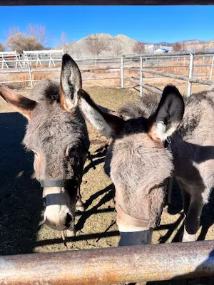
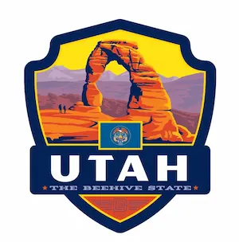

My name is Joyce Keil. I live in Utah. I have traveled many places and I find that Utah is still one of the most beautiful places I have seen. I am a busy parent of six kids, sharing my life with four horses, two donkeys, and a pony. When I'm not caring for my family and animals, I love getting lost in a good book or expressing myself through poetry.
About Me
Utah Is A Beautiful Place

Utah, known as the Beehive State, is famous for its stunning landscapes, including five national parks (Arches, Bryce Canyon, Canyonlands, Capitol Reef, and Zion). The state is home to the Great Salt Lake, the largest saltwater lake in the Western Hemisphere. Utah was settled by Mormon pioneers in 1847 and officially became the 45th U.S. state in 1896. It has a strong outdoor recreation industry, offering world-class skiing, earning it the nickname "The Greatest Snow on Earth." The state's economy is driven by technology, tourism, and mining, making it one of the fastest-growing states in the U.S.